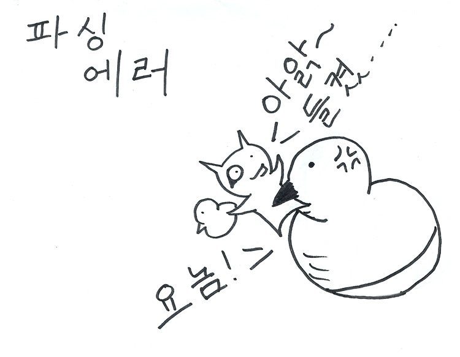

즐거운 펄
기억
남기기
Bizspring
Perlmania
문서는 이곳에서도
볼 수 있습니다:
귀여운 파싱을 배워 봅시다!
파싱이란?
- 정의된 규칙을 이용한 텍스트 매칭
- 펄이 존재 하는 이유
- 펄을 위해 있는 존재
궁극적인 목표?
- 구조없음에 구조를 부여 하기
- 의미없음에 의미를 부여 하기
- 귀염없음에 귀염를 ...
내 마음대로 입니다.
주로 파싱에 대한 소개는...
너무 이론적이며 툴에 특화에 되어 있습니다.
그래서...
정규식을 아시는 분들께
- 정규식으로는 어려운 파싱 문제 소개
- 문법을 이용한 파싱 소개
정규식의 다음단계로~
컴퓨터 공학 정규식은
- concatenation a.b
- alternation a|b
- repetition a*
- grouping (ab)
Perl의 정규식은
- 컴퓨터 공학 정규식
- lookaround
- capturing groups and backreferences $&, $1..
- zero width assertions (like \b)
- 너무 커서 기타등등에도 안들어가요;;
정규식은 짧고 고정된 문자열 패턴에는 좋지만
여러 구조와 의미를 가지는 문자열 ( 언어 )
중첩적인 문제에는 적합하지 않습니다.
예를 들면...
연산자에서 사용하는 괄호
(10 + (2*(3+4)))
# (10 + (2*(3+4)))
# 정규식이 매칭한 값, 전혀 원하는 값이 아니다;;
qr{\(.*?\)} # => 10 + (2*(3+4
qr{\((.*)\)} # => 10 + (2*(3+4))
while (/\((.*)\)/g) { ... }
이런 문제들을 위해
- Damian Conway경의 Text::Balanced
- Perl 5.8, 5.10 recursive regex
regular language를 준수 하는 문제가 아닙니다.
재귀적반복을 지원하는 문법
Context Free Grammar
term -> atom operator term
term -> '(' term ')'
term -> atom
operator -> '*' | '/'| '+' | '-'
atom -> \d+
(2 * (3 + 4))
term ->
atom operator term
'2' operator term
'2' '*' term
'2' '*' (atom operator term)
'2' '*' ('3' operator term)
'2' '*' ('3' '+' term)
'2' '*' ('3' '+' (atom))
'2' '*' ('3' '+' ('4'))
이를 구현할수 있는 모듈인
Parse::RecDescent
저녁은 주물럭~
DuckTrain -> Mummy Ducklings
| Mummy Ducklings Ugly
| Mummy Ducklings Ugly Ducklings
| Ducklings Mummy
| Ugly Ducklings Mummy
| Ducklings Ugly Duckling Mummy
Ducklings -> Duckling Ducklings | Duckling
Mummy -> mummy
Duckling -> duck1 | duck2
Ugly -> rune
GraphViz::Parse::RecDescent
데모 #1

파싱 매칭 예
DuckTrain -> Mummy Ducklings Ugly 'mummy' Ducklings Ugly 'mummy' Duckling Ducklings Ugly 'mummy' 'duck1' Ducklings Ugly 'mummy' 'duck1' Duckling Ugly 'mummy' 'duck1' 'duck2' Ugly 'mummy' 'duck1' 'duck2' 'rune' 'mummy duck1 duck2 rune'
파싱에러
"Recursive Descending"
룰을 이용한 재귀적 하강
Terminal Matching
"Predictive"
다음에 처리 할 Token에 대한 예측
!Top-Down Parser!
perl++
damian++
emacs++
emacs--
duck++
소셜 토크
펄이 잼있는 점이 있는데..
바로 문화가 있다는 점이 되겠죠?
펄이라는 주제로 모인 동산
IRC
perl-kr@freenode
perl@hanirc
IRC #1
IRC #2
IRC #3
진님과하얀고양이님
객체화 프로젝트
거의 불가능한 자연어 처리;;
- 미중년의 배짱 - JEEN
- 야근야근 열매 먹었다능 - 하얀_고양이
- 손에 체중이 묵었... - saillinux
- a3r0님급의 펄 실력과 김태희급의 얼굴과 몸매를 가지는 펄 하악커 없나용? - JEEN
데모 #2
실행코드 #1
실행코드 #2
진님스러운 말빨
{
my %meat_level = ("한단" => 1, "두단" => 2, "삼단" => 3, "사단" => 4,
"1" => "한단", "2" => "두단", "3" => "삼단", "4" => "사단" );
}
아왜욤: 진님스러운
진님스러운: 뻘짓 /\Z/ { $item[1] }
| 뭥미 /\Z/ { $item[1] }
| 대연합하얀고양이 /\Z/ { $item[1] }
| <error: 아 왜욤! 한번 해보시겠다능?>
뻘짓: 뻘짓1 { 뻘짓랜덤(@진사마::quotes) }
뻘짓1: ('하악하악' | '이제그만')
대연합하얀고양이: 연합1 { $item[1] }
| 연합2 { $item[1] }
연합1: '사단고기' { "이제그만\n" }
| /(.*)고기/ { $meat_level{$meat_level{$1} + 1} . "고기" }
연합2: /.*탓하십시오/ { '&#$&"#$!"#!"$23534%$%#$%' }
| '@#$!@%@#$%@#$%@#$%' { "오호라.. 한번 해보시자능\n" }
뭥미: 뭥미1 { "...\n" }
뭥미1: '라면 먹고 얼굴 퉁퉁 배도 통통'
무한냐옹법전
my %meat_level = ("한단" => 1, "두단" => 2, "삼단" => 3, "사단" => 4,
"1" => "한단", "2" => "두단", "3" => "삼단", "4" => "사단" );
}
냐옹: 하얀고양이님스러운
하얀고양이님스러운: 카운터 /\Z/ { $item[1] }
| 뻘짓 /\Z/ { $item[1] }
| <error: 그런 대화는 없었습니다만...>
카운터: 카운터1 { "라면 먹고 얼굴 퉁퉁 배도 통통" }
| 카운터2 { $item[1] }
| 카운터3 { $item[1] }
카운터1: '라면 먹고 힘 짱짱'
카운터2: '사단고기' { '이제그만' }
| /(.*)고기/ { $meat_level{$meat_level{$1} + 1} . "고기" }
카운터3: '이게 다 하얀_고양이님때문' { '음... 저를 탓하십시오' }
| '&#$&"#$!"#!"$23534%$%#$%' { '@#$!@%@#$%@#$%@#$%' }
뻘짓: 뻘짓1 { "하악하악\n" }
뻘짓1: ( /\.{3,}/ | '이제그만' | /.*해보시자능/ )
파서내에서의
- 변수선언 (로컬, 전역)
- 함수선언 (로컬, 전역)
- Top-Down Parser
관심 있으신가요?
그럼 Randal의..
Random Sentence Generator
데모실행
펄6 에서의 문법구현하기
Parse::RecDescent 구현
my $parse_global = new Parse::RecDescent (q{
input: blank | comment | class | section
comment: /^\s*/ '#' { 1; }
blank: /^\s*$/ { 1; }
section: /\w+/ ':'
{ $::current_section = $item[1];
$::current_classes = 'any'; 1;
}
class: compound_class '::'
{ $::current_classes = $item{compound_class}; 1; }
compound_class: /[-!.|\w]+/
});
$parse_global->input("TEXT GOES HERE");
Perl 6 Grammar
grammar Global
{
rule input { <blank> | <comment> | <class> | <section> }
rule blank { ^^ \s* $$ }
rule comment { ^^ \s* \# }
rule section
{ (\w+) \s* \:
{
$::current_section = $1;
$::current_classes = 'any';
}
}
rule class { (<compound_class>) \s* \:\:
{
$::current_classes = $1;
}
}
rule compound_class { <[-!.|\w]>+ }
}